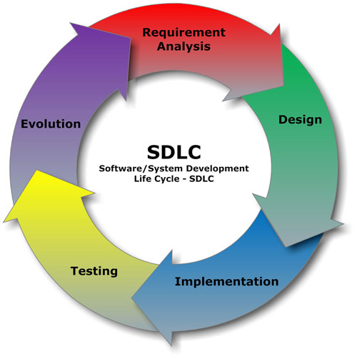

Test Driven Development
Software Life Cycle
Github

TDD
TDD Workflow
- Write a test
- Watch it fail
- Write the code
- Watch it fail
- Fix
- Watch it pass
- Feel good
- Add, commit, push, pull request
Mocha Test Framework
Install Mocha Globally
$ npm install mocha -g
Create NPM App
Let's start by creating a new directory
$ mkdir newdir
$ cd newdir
Initialize Application
Initialize application, set "test" property to "mocha || true"
$ npm init
Press ^C at any time to quit.
name: (testor)
version: (1.0.0)
description: use mocha tests
entry point: (index.js)
test command: mocha || true
Sample Metadata
Sample package.json file
{
"name": "testor",
"version": "1.0.0",
"description": "tdd",
"main": "index.js",
"directories": {
"test": "test"
},
"scripts": {
"test": "mocha || true"
},
"author": "abel@mit.edu",
"license": "MIT"
}
Add A Code File
Write a code file, call it sum.js
function sum(a, b) {
return a + b;
}
module.exports = sum;
Write a Test File
Write a test file, call it test/test.js
var sum = require('../sum.js');
var assert = require('assert');
describe('check functions', function() {
describe('add', function() {
it('it should return 2 when we pass 1,1', function() {
assert.equal(2, sum(1,1));
});
});
});
Run Test
$ npm test
Sample output
Jest Test Framework
Install Jest Globally
$ npm install -g jest
Create NPM App
Let's start by creating a new directory
$ mkdir newdir
$ cd newdir
Initialize Application
Initialize application, set "test" property to "jest"
$ npm init
Press ^C at any time to quit.
name: (testor)
version: (1.0.0)
description: use jest tests
entry point: (index.js)
test command: jest
Sample Metadata
Sample package.json file
{
"name": "testor",
"version": "1.0.0",
"description": "jest tests",
"main": "index.js",
"scripts": {
"test": "jest"
},
"author": "abel@mit.edu",
"license": "MIT"
}
Add A Code File
Write a code file, call it sum.js
function sum(a, b) {
return a + b;
}
module.exports = sum;
Write a Test File
Write a test file, call it sum.test.js
const sum = require('./sum');
test('adds 1 + 2 to equal 3', () => {
expect(sum(1, 2)).toBe(3);
});
Run Test
$ npm test